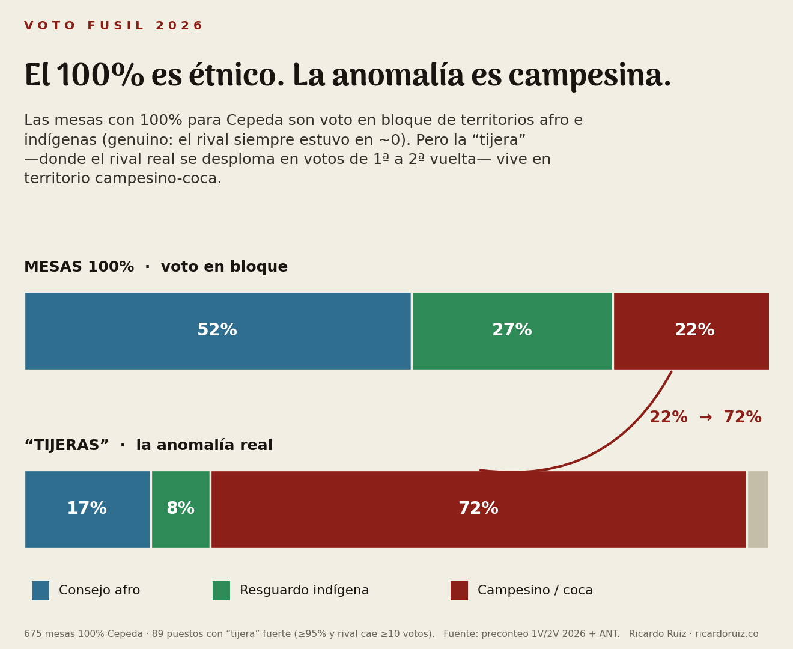
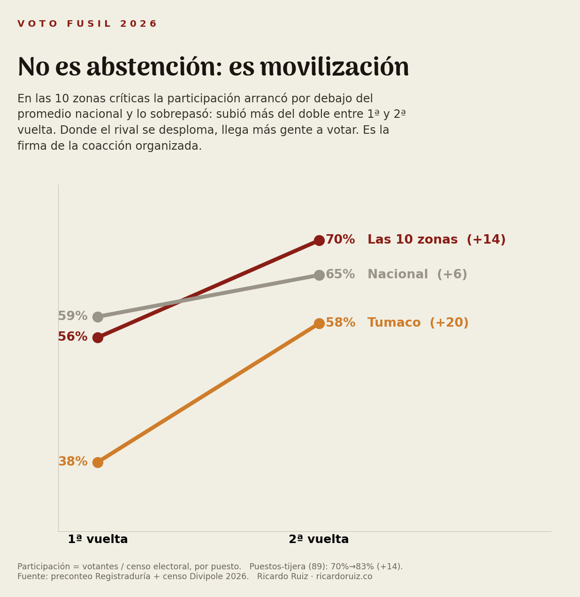
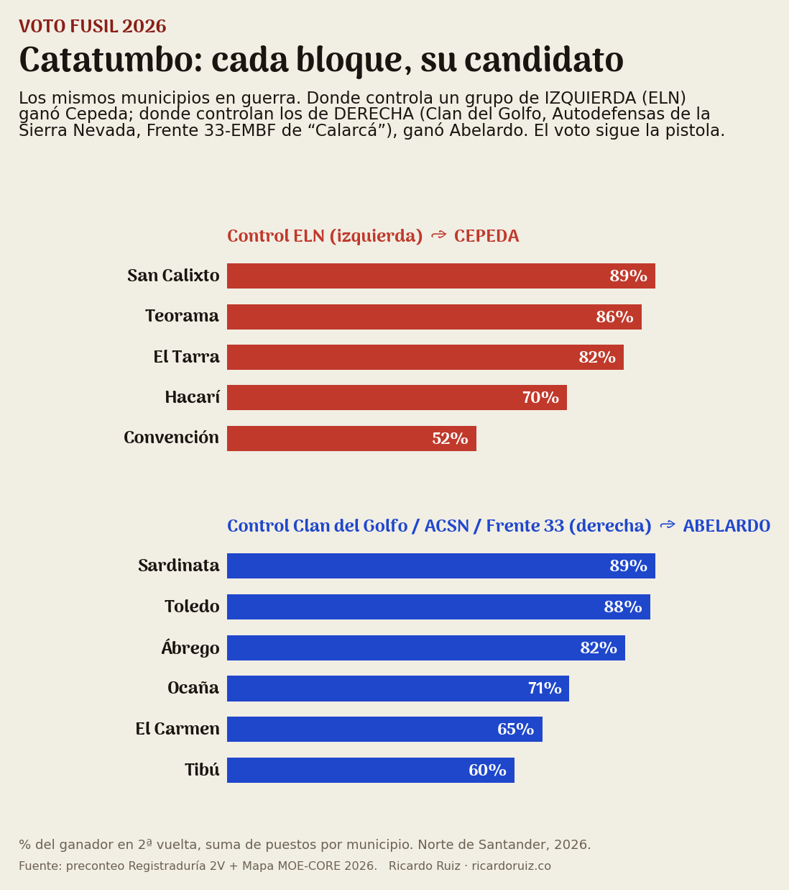

El “voto fusil” se volvió grito de un lado y burla del otro. Bajamos al preconteo, puesto por puesto. La respuesta no le sirve a ninguno de los extremos: el fusil existe, está probado en casos concretos, opera en varios bandos — y no está donde casi todos lo buscan.
Iván Cepeda sacó 100% en 675 mesas; Abelardo de la Espriella en 81, casi todas del exterior. Suena escandaloso, pero una mesa rural tiene 200–600 votantes y muchas son comunidades enteras. Tres referentes —La Silla Vacía, Michael Weintraub con la MOE y la FIP— mostraron que esos 100% pesan menos del 0,5% del total y no movieron el resultado (Abelardo ganó por 250.830 votos).
Hasta ahí, de acuerdo. El problema es que ahí cerraron la pregunta. Nosotros apenas la empezamos: ¿qué hay detrás de cada una de esas mesas?
El 78% de las mesas 100% están en territorio colectivo étnico. Y un matiz que se les escapó a los tres análisis por trabajar a nivel nacional y solo con resguardos: en el Pacífico la mayoría no es indígena, es afro — consejos comunitarios titulados (Ley 70) que deciden el voto en asamblea. Lo cruzamos contra las capas oficiales de la Agencia Nacional de Tierras: 52% consejo afro, 27% resguardo indígena. Eso es voto en bloque legítimo, no fusil.

No el nivel de votación, sino la dinámica entre primera y segunda vuelta. Como subió la participación entre vueltas, lo normal es que los dos candidatos crezcan en votos. La derecha venía fragmentada (Abelardo, Paloma, Miguel Uribe) y debía consolidarse al alza. El patrón sospechoso no es que uno saque mucho: es que uno crezca y el rival se desplome en votos absolutos.
En un puesto de Tumaco, Abelardo pasó de 219 votos a 101… mientras llegaban 1.681 votantes más. No es que sus electores se quedaron en casa: votó más gente que nunca, y los de Abelardo se esfumaron.
Pasó en 976 puestos (7%). Pero entre los puestos casi-unánimes salta al 42%. Y al cruzarlo con el territorio, el 72% de los desplomes está en zonas campesinas-coca, no en los resguardos: la unanimidad indígena no es el problema; el desplome campesino sí.
Si fuera presión a la abstención, los votantes del rival se habrían quedado en casa. Pasó lo contrario. En las zonas críticas votó más gente que el promedio nacional: mientras el país subió 6 puntos de participación entre vueltas, ellas subieron el doble (+14), arrancando por debajo y sobrepasándolo. Llega más gente a las urnas y los votos del rival caen al piso — la huella de una votación organizada.

Cruzamos los puestos-tijera con tres fuentes independientes: presencia de grupo armado (Mapa de Riesgo MOE-CORE 2026), Alertas Tempranas de la Defensoría, y prensa con hecho fechado. Coinciden las tres en 10 zonas, todas en el corredor campesino-coca de Cauca y Nariño, bajo control del EMC, línea de “Mordisco” — frentes Carlos Patiño (sur del Cauca), Franco Benavides (cordillera nariñense) y Oliver Sinisterra (Tumaco). No es Calarcá: ese es el otro bloque.
Miramos el Catatumbo y los Santanderes con la misma lupa. La tijera mesa-a-mesa casi no aparece del lado de Abelardo (sus puestos son chicos), pero a nivel municipio el patrón es simétrico: donde manda el ELN ganó Cepeda; donde mandan los grupos de derecha —Clan del Golfo, Autodefensas de la Sierra Nevada y el Frente 33-EMBF de “Calarcá”— ganó Abelardo. El voto sigue el linaje de la pistola en los dos lados.

En estas zonas no estamos adivinando. En Policarpa hubo una masacre rural el 5 de marzo y se filtró un audio de las disidencias exigiendo mostrar el certificado electoral para poder moverse. En Tumaco la Defensoría documentó “gobernanza criminal” que veta candidaturas (Alerta 013-25). Hay líderes asesinados. La evidencia ya inclina la balanza: aquí el fusil operó. El terreno hace falta para validar cada denuncia puntual — no para decidir si el fenómeno existe.
| Dimensión | La Silla · Weintraub · FIP | Nosotros |
|---|---|---|
| Señal | Nivel 2V · 100% · regresión | La tijera 1V→2V + la participación |
| Territorio étnico | Solo resguardo (indígena) | Resguardo + consejos afro (capa ANT) → 52% afro |
| Comparación temporal | Cross-año (2018/22) | Dentro del ciclo (1V→2V); es contextual |
| Los dos bandos | Solo Cepeda | Cepeda y Abelardo (simetría Catatumbo) |
| Postura | “No fue el fusil” | Existe, puntual, en varios bandos; el terreno valida |
Datos. Preconteo de la Registraduría (1ª y 2ª vuelta 2026) a nivel mesa y puesto; censo Divipole 2026 (por puesto, no por mesa); capas oficiales de la Agencia Nacional de Tierras (resguardos indígenas + títulos colectivos afro), cruzadas por point-in-polygon con la coordenada de cada puesto; Mapa de Riesgo Electoral MOE-CORE 2026; Alertas Tempranas de la Defensoría del Pueblo; prensa verificada con fecha.
Tijera. Puesto donde el ganador ≥95% y el rival cae ≥10 votos absolutos de 1ª a 2ª vuelta. Limpiamos ~17 mesas “100%” que eran error de digitación del E14 (no unanimidad).
Límites. La tijera señala dónde mirar, no prueba coacción mesa por mesa: la conformidad social del voto en bloque produce un patrón parecido. Por eso se distingue el territorio étnico (genuino) del campesino (anómalo) y se exige corroboración de grupo armado + Defensoría + prensa. La palabra final es de terreno. La asimetría 89 vs 3 está en parte sesgada por el tamaño de los puestos.